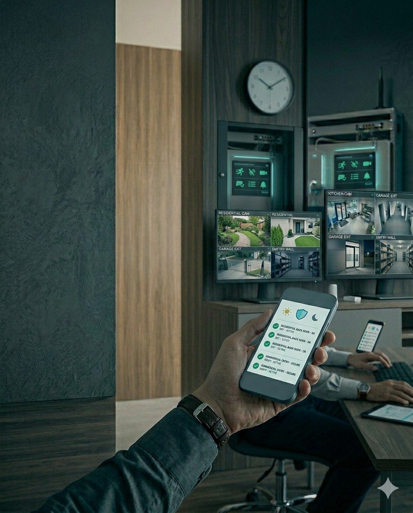

Reaccion rapida
Una alarma o evento critico puede escalar a nivel comunitario para alertar a vecinos y responsables de seguridad.
En SmartHome desarrollamos un ecosistema de proteccion para comunidades que integra alarmas comunitarias, camaras, control de accesos, defensa perimetral y monitoreo coordinado.
Una alarma o evento critico puede escalar a nivel comunitario para alertar a vecinos y responsables de seguridad.
Los usuarios pueden informar situaciones sospechosas y activar recursos de forma simple desde el celular.
Cercos eléctricos, barreras y puntos de control ayudan a detectar amenazas antes del ingreso al barrio.
Camaras y registros permiten respaldar eventos, consultar movimientos y mejorar la toma de decisiones.

Activacion coordinada para avisar rapidamente a toda la red vecinal ante una incidencia.
Gestion segura de ingresos, visitas y movimientos con historial y mayor orden operativo.
Monitoreo visual de accesos, espacios comunes y puntos estrategicos del barrio.
Cercos, barreras y capas de deteccion temprana para reforzar la seguridad exterior.
La propuesta puede contemplar equipos en comodato o compra comunitaria, con mantenimiento preventivo y correctivo para que el sistema se mantenga operativo sin complejidad para los vecinos.
El objetivo es que cada hogar cuente con una cuota clara y un servicio integral, con una experiencia simple, coordinada y sostenible para toda la comunidad.
Analizamos accesos, perimetro, circulaciones, necesidades de vecinos y modelo operativo.
Definimos capas de seguridad, integraciones y criterios de aviso segun el tipo de comunidad.
Implementamos la solucion y dejamos operativos accesos, alertas, monitoreo y comunicaciones.
Acompanamos la operacion para que el sistema siga siendo util, confiable y escalable.
Si queres evaluar una solucion para tu barrio, consorcio o entorno residencial, te ayudamos a definir una propuesta profesional y adaptada a la realidad del lugar.